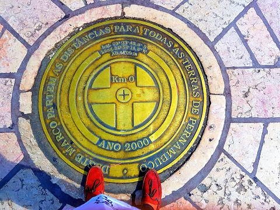
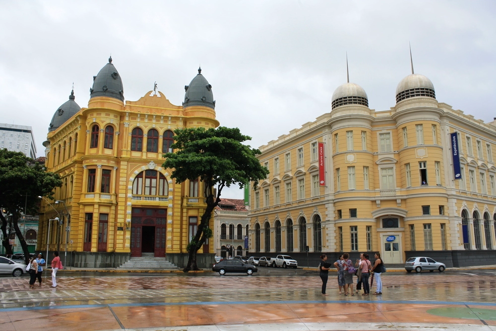

Recife
Marco Zero

- 

- 
O Marco Zero de Recife é um ponto emblemático que simboliza o início da contagem das distâncias rodoviárias da capital pernambucana. Mais do que um simples marco geográfico, esse local desempenha um papel significativo na identidade e na história da cidade.
Situado no bairro do Recife Antigo, às margens do Rio Capibaribe, o Marco Zero é marcado por uma escultura que representa a Rosa dos Ventos, projetada pelo artista plástico Abelardo da Hora. A escultura é rodeada por um amplo espaço aberto, proporcionando aos visitantes uma vista panorâmica do rio e dos arredores.
Além de sua função prática como ponto de referência geográfica, o Marco Zero é um ponto de encontro e celebração para os recifenses e turistas. O local é palco de diversos eventos culturais, festivais, apresentações musicais e manifestações populares. A atmosfera vibrante e aconchegante do Recife Antigo tornam o Marco Zero um lugar querido pelos habitantes locais e pelos visitantes.
A proximidade do Marco Zero com o Rio Capibaribe é um dos seus atrativos mais encantadores. A partir desse ponto, é possível realizar passeios de barco que revelam as belezas naturais e arquitetônicas da cidade. As pontes que cruzam o rio, os casarões históricos e a paisagem ribeirinha contribuem para a experiência única que o Marco Zero oferece.
Além disso, o Marco Zero está estrategicamente posicionado próximo a diversos pontos turísticos, como o Paço Alfândega, o Cais da Alfândega e o Centro de Artesanato de Pernambuco. Essa localização privilegiada faz com que o Marco Zero seja uma parada obrigatória para quem deseja explorar e compreender a riqueza cultural e histórica de Recife.
Em resumo, o Marco Zero de Recife vai além de ser apenas um ponto de referência geográfica. Ele é um símbolo da identidade e da cultura da cidade, um espaço que acolhe a diversidade e promove a convivência. Ao visitar o Marco Zero, os indivíduos têm a oportunidade não apenas de marcar o início de suas jornadas na cidade, mas também de mergulhar nas tradições e na beleza que fazem de Recife um destino único.